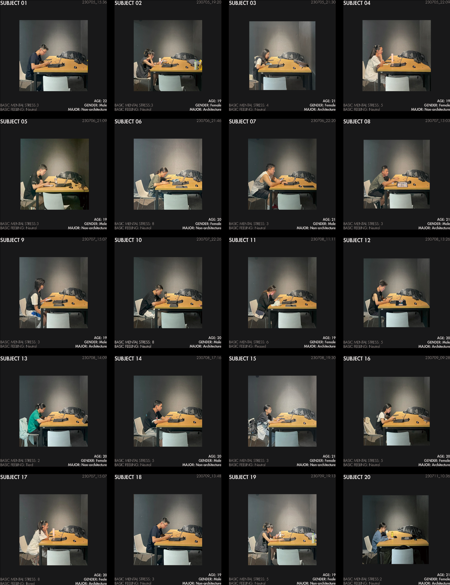

AI生成建筑渲染图像对情绪刺激的影响研究 （专利申请中）
-
通过我设计的文本生成器，可以使用生成的TEXT2IMAGE扩散模型生成一系列空间场景。然后，参与者对生成的图像进行情绪评估。可以开发一个CNN模型或其他相关模型，训练AI学习情绪数据集与输入提示之间的关联。由于时间限制，我使用了Stable Diffusion生成实验所需的数据集，而不是训练CNN模型。通过这个协议，可以建立书面提示与情绪结果之间的直接联系。换句话说，AI可以根据场景的描述预测其情绪反馈。
1.AI图像生成输入框架
基于自然语言，空间信息可以分为三类：“T代表构造（Tectonics），M代表材质（Materiality），A代表氛围（Ambiance）。”T包括空间中的基本尺度、形状和细节构造；M关注不同区域中材料的属性；A则包括非建筑元素，如时间、光线和植物等。每个提示必须以这种总体结构开始，以保持一致性。在建立了主要结构后，内容进一步细分为次要元素，如图示中的Tn、Mn和An。提供的图示展示了一个广泛适用的提示结构原型，通过为不同元素分配权重，可以高效地生成具有一致差异的视觉刺激数据集。
2.可用性测试
我招募了20名参与者进行文本生成器情绪影响的可用性测试。首先，他们被要求从每组渲染的图像中选择最佳质量的图像，然后根据PAD量表对所选图像的情绪影响力进行评分。结果显示，构造（Tectonics）、材质（Materiality）和氛围（Atmosphere）与愉悦度（Valence）和支配感（Dominance）呈中等负相关。构造与愉悦度之间有较强的正相关。这与实验假设基本一致。
3.验证实践
根据从PAD评估中得出的结论，我设计了一系列反映情绪变化的空间序列，主题为情绪博物馆。随后，我招募了34名参与者进行EEG和眼动追踪实验，以评估空间物体的情绪影响力。结果显示，BIN 01、02和03的样本表现出增强的积极反应，而BIN 04和05则呈现出镇静效应。在眼动追踪分析中，观察到参与者首先聚焦于空间中的显著物体，接着是具有特殊形状的区域。在没有特定设计特征的地方，扫视模式趋向于更为分散。
-
关键词: 量化用户研究，可用性测试，情感计算，稳定扩散模型，人工智能，脑电，皮肤电导率
项目类型:
145国家重点实验室，庄惟敏教授
'Museum of Emotions' 建筑竞赛
'AI+Architecture Edition 2' 设计工作坊
时间: 2023.5-2024.7
指导: 庄惟敏, 郭安筑
合作: 独立完成
主要贡献:
1. 发明了一种用于生成AI工具的三层提示方法，并撰写了专利申请的专利披露文件;
2. 使用眼动追踪、EEG、EDA和PAD量表对所发明的方法进行了34名参与者的可用性测试，并使用MATLAB和Python进行了数据分析;
专利: 龙俊潇; 郭安筑 (审查中). 建筑场景生成方法、装置、电子设备和存储介质 (CN. 202311280838.6). 国家知识产权局.


